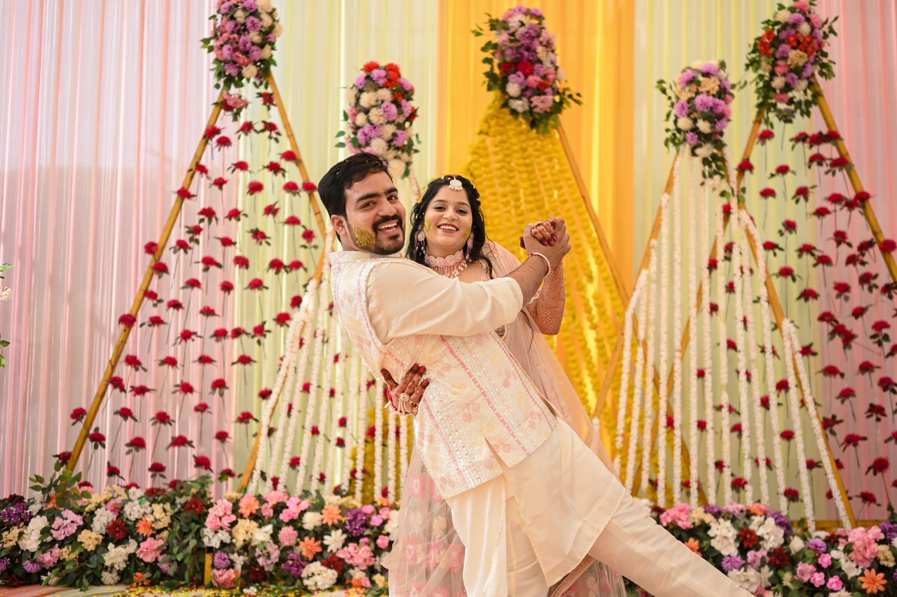

Thirty-eight performers and a stage that shrank
- Families Patil – Joshi
- Venue Baner lawns, Pune
- Date 14 February 2026
- Numbers 9
- Performers 38
- Rehearsals 41 over 6 weeks
- The ask
- Nine numbers and thirty-eight performers, including the bride's 71-year-old grandmother, who wanted a verse of her own. The family wanted “a proper show, not a talent evening.”
- What I did
- Blocked the whole night on a 24-foot stage plan — then the venue moved us to a lawn with a 16-foot stage, one week out. Every formation was re-blocked in two emergency rehearsals: circles became arcs, the finale became a two-row wave, and the grandmother's chair moved to centre mark 6, where she could be seated before the house lights came up.
- The outcome
- 47 minutes of show, zero missed entries, and the grandmother's seated verse closed the night to the loudest cheer of the evening. The full running sheet from this night is on the home page.
“My mother had not danced since her own wedding. Kavya gave her a chair, a mark on the floor and five rehearsals, and on the night she got the loudest cheer of anyone — louder than the couple. The running sheet meant I did not think about the show once. I just watched my family.”